Omnidirectional stereo matching (OSM) estimates 360° depth from multi-view fisheye images, where inherent fisheye distortion causes sparse matching cues in seam regions. However, existing methods rely on spatially uniform update policies, degrading performance in these challenging regions.
To address this limitation, we propose PDF-Omni, a geometry-aware OSM framework built on a Poincaré Dual Disk (PDD) distortion field that models spatially varying geometric uncertainty across seam regions. We introduce a distortion-informed GRU (DiGRU) with distortion-aware attention (DAA) to selectively expand the receptive field in high-uncertainty regions while preserving efficiency in low-uncertainty ones. We further present a local entropy cumulative (LEC) loss to supervise high-entropy cost distributions in ambiguous regions.
Experimental results demonstrate state-of-the-art performance on five datasets, with consistent gains especially in seam regions — while running 41.9% faster with 15.9% less memory than OmniMVS+.
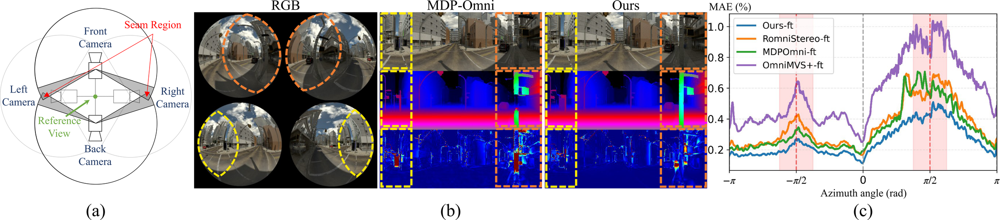
Depth errors of prior methods peak at seam regions (θ=±π/2), where fisheye distortion is most severe — PDF-Omni flattens these peaks (c).
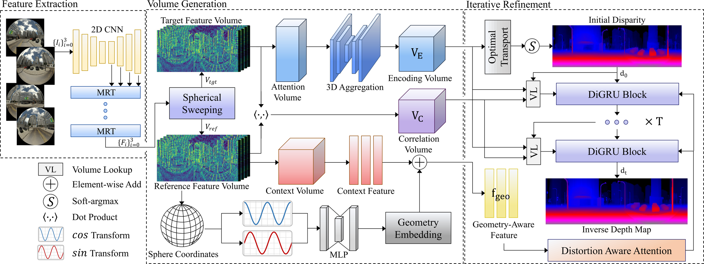
Overview. Spherical sweeping builds encoding/correlation volumes from four fisheye views; DAA turns the PDD distortion field into spatial attention that guides DiGRU's iterative refinement.
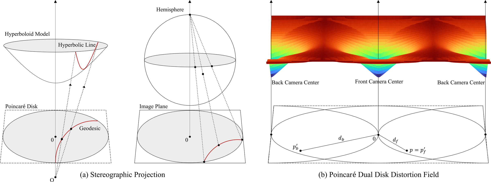
Two Poincaré disks at the front/back camera centers share the fisheye's boundary-divergent metric; their geodesic distances fuse into one field that unifies radial distortion and view-transition ambiguity, peaking exactly at the seams.
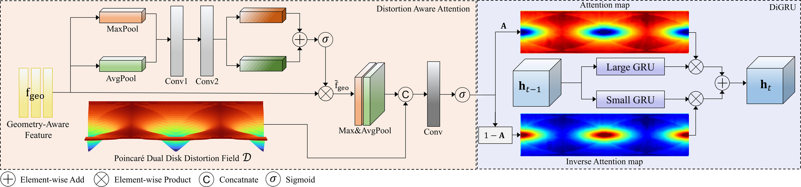
DAA derives attention from the PDD field; DiGRU blends small- and large-kernel GRU branches per pixel, widening the receptive field only where geometric ambiguity demands it.
The LEC loss regularizes the depth probability volume itself: each pixel's supervision radius adapts to its cost-distribution entropy, relaxing supervision exactly where correspondences are ambiguous.
A traffic-signal pillar stands in the high-uncertainty zone flagged by the PDD field (red tint). Prior methods erode, detach, or evaporate the pillar — PDF-Omni keeps it intact, matching ground truth.
The same frame as point clouds, camera orbiting. Structures that prior methods scatter into noise stay solid with PDF-Omni.
Drag the slider — predicted 360° depth ↔ input RGB.
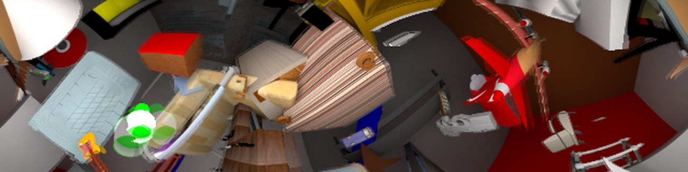
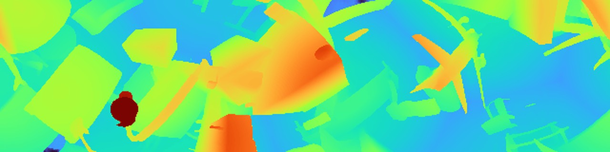
OmniThings
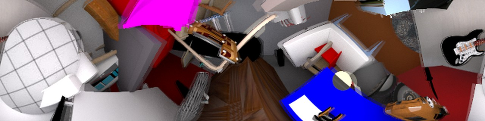
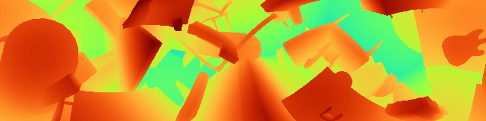
OmniThings
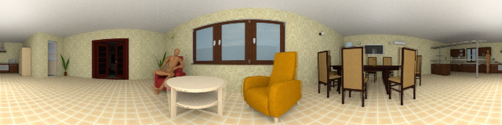
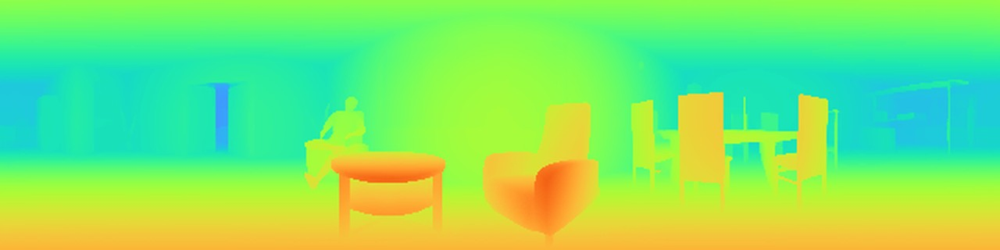
OmniHouse
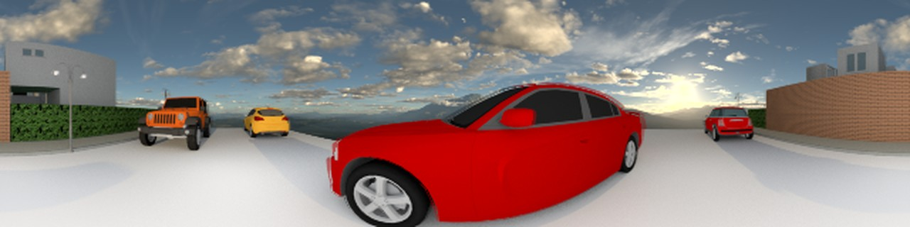
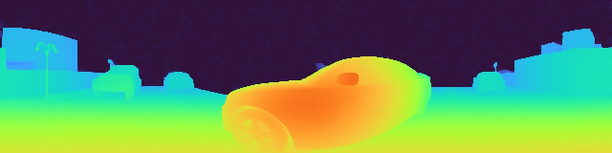
OmniHouse
Each cloud is reconstructed from a single PDF-Omni prediction.
Zero-shot PDF-Omni on our own multi-fisheye rig — campus driving sequence: four fisheye inputs, stitched RGB panorama, and predicted 360° depth.
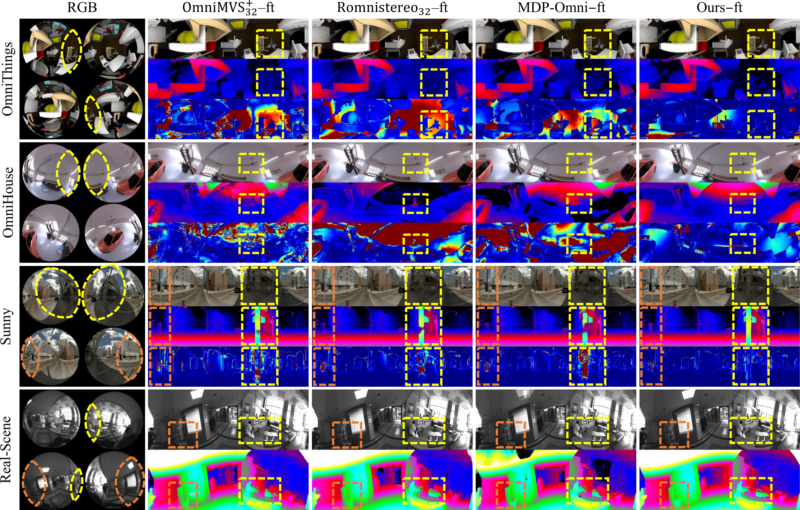
Comparison of fine-tuned models on OmniThings, OmniHouse, Sunny, and real-scene data. PDF-Omni produces sharper depth boundaries and fewer artifacts in seam regions (dashed boxes) than MDP-Omni and RomniStereo.
State-of-the-art on all five benchmarks, on every metric. Errors are inverse-depth index errors (%); lower is better.
| Method (fine-tuned) | OmniThings | OmniHouse | Sunny | Cloudy | Sunset | |||||
|---|---|---|---|---|---|---|---|---|---|---|
| >1 | MAE | >1 | MAE | >1 | MAE | >1 | MAE | >1 | MAE | |
| OmniMVS-ft | 50.28 | 3.52 | 21.09 | 1.04 | 13.93 | 0.79 | 12.20 | 0.72 | 14.14 | 0.79 |
| S-OmniMVS-ft | – | – | 6.99 | 0.42 | 6.66 | 0.47 | – | – | – | – |
| OmniMVS+32-ft | 44.79 | 4.23 | 9.70 | 0.64 | 7.48 | 0.57 | 7.29 | 0.54 | 7.82 | 0.58 |
| RomniStereo32-ft | 34.32 | 2.81 | 6.02 | 0.49 | 5.19 | 0.36 | 5.63 | 0.39 | 5.53 | 0.37 |
| MDP-Omni-ft | 29.53 | 1.96 | 5.61 | 0.44 | 4.51 | 0.33 | 5.34 | 0.36 | 4.90 | 0.35 |
| PDF-Omni-ft (Ours) | 17.75 | 1.31 | 2.86 | 0.23 | 3.54 | 0.25 | 3.92 | 0.27 | 3.93 | 0.27 |
Lowest error in both regions, with the smallest seam ↔ non-seam gap (1.04 pp vs. 1.83/1.90) — seam ambiguity is mitigated without sacrificing non-seam accuracy.
| Method (fine-tuned) | Region | >1 | >3 | >5 | MAE | RMS |
|---|---|---|---|---|---|---|
| OmniMVS+32-ft | Seam | 8.955 | 4.191 | 2.957 | 0.719 | 3.214 |
| Non-Seam | 6.977 | 3.354 | 2.232 | 0.524 | 2.244 | |
| RomniStereo32-ft | Seam | 6.618 | 2.757 | 1.829 | 0.475 | 2.369 |
| Non-Seam | 4.714 | 1.726 | 1.033 | 0.318 | 1.628 | |
| MDP-Omni-ft | Seam | 5.879 | 1.915 | 1.206 | 0.447 | 2.706 |
| Non-Seam | 4.050 | 1.267 | 0.745 | 0.294 | 1.519 | |
| PDF-Omni-ft (Ours) | Seam | 4.314 | 1.730 | 1.119 | 0.332 | 1.984 |
| Non-Seam | 3.270 | 1.173 | 0.687 | 0.229 | 1.258 |
On an RTX 3090, PDF-Omni runs at 0.36 s/frame with 5,284 MB of GPU memory — 41.9% faster and 15.9% lighter than OmniMVS+32 (0.62 s, 6,284 MB) while being substantially more accurate.
DAA+DiGRU also works as a drop-in replacement for the recurrent unit of existing RAFT-based OSM frameworks: plugged into RomniStereo32, it reduces >1 error on OmniThings by 15.4% and MAE on OmniHouse by 21.3%, outperforming the Selective-Stereo SRU alternative across all datasets.
@inproceedings{yang2026pdfomni,
author = {Yang, Yunseok and Son, Eunjin and Lee, Sang Jun},
title = {PDF-Omni: Poincar{\'e} Dual Disk Distortion Field-based Recurrent Update for Omnidirectional Stereo Matching},
booktitle = {European Conference on Computer Vision (ECCV)},
year = {2026},
}